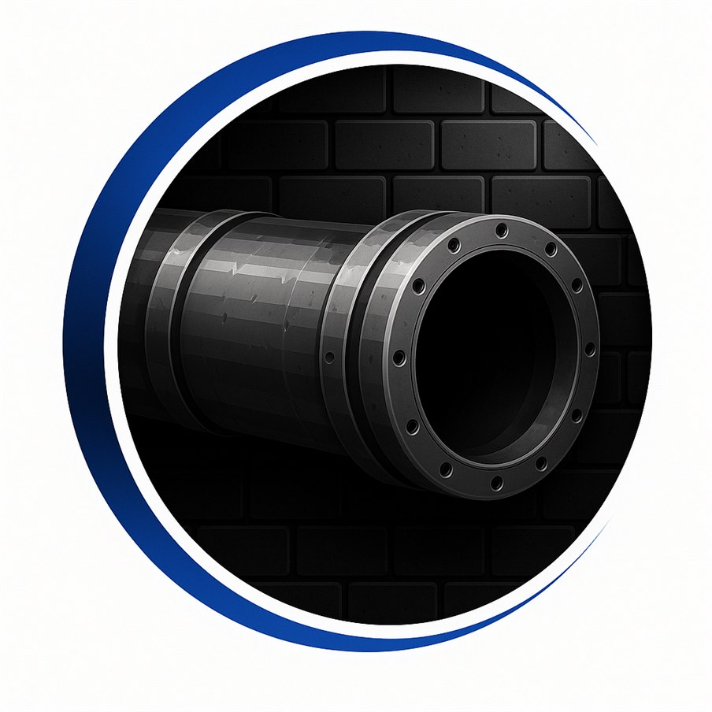

Sewer & Drain Cleaning
From a sluggish kitchen sink to a main line backing up into the basement, we clear the clog at its source and get your system draining the way it should — a clean finish that lasts, not a quick patch.
Clear Way Sewer & Drain handles sewer & drain cleaning, snaking, hydro jetting, and camera inspections for homes and businesses across Orange, Sullivan, Dutchess & Ulster County and the surrounding Hudson Valley. Fast, reliable, fully insured service when you need it most.

One local crew for everything from a single slow drain to a full main-line backup — diagnosed honestly and cleared the right way.
From a sluggish kitchen sink to a main line backing up into the basement, we clear the clog at its source and get your system draining the way it should — a clean finish that lasts, not a quick patch.
Motorized snaking cuts through hair, grease, soap buildup, and stubborn obstructions in sinks, tubs, toilets, and floor drains — fast and effective for routine clogs, without tearing into your plumbing or your wallet.
For grease-caked, root-invaded, or scaled lines, high-pressure water scours the full diameter of the pipe — not just punching a hole through the clog — restoring flow and helping keep the backup from returning.
We send a waterproof camera through your line to see exactly what is wrong — roots, cracks, collapses, or bellies — with no guesswork and no unnecessary digging, then give you a straight answer on the real fix.
Whether it is a family home with one slow drain or a business that can't afford downtime, we size the job to fit. Homeowners, landlords, restaurants, and property managers count on us for tidy, dependable work.
Sewer backups don't wait for business hours, and neither do we. When water is rising and you need help now, call and we'll get to you as quickly as we can — day or night.
Straightforward service from a local crew that shows up, explains the problem in plain terms, and clears it right.
We've cleared every kind of clog and sewer backup, so we know how to diagnose the real problem and fix it right the first time.
Sewer backups don't wait for business hours, and neither do we — with emergency service available when water is rising and you need help now.
We're properly insured for every job, so your home or business is protected from the moment we arrive until the work is done.
You get a clear price before we start, from a local crew that serves your community — with no surprise add-ons after the work is finished.
A simple, no-surprises process that gets your drains moving again.
Tell us what's going on. We get the details, answer your questions, and schedule you fast — with emergency service when you can't wait.
We inspect the line and, when needed, run a camera through it to pinpoint the exact cause and location of the blockage. No guessing.
Using snaking or hydro jetting — whichever the job calls for — we clear the obstruction at its source and clean the line thoroughly.
We confirm everything drains freely, walk you through what we found, and leave your space clean so you can get back to normal.
Local sewer & drain service for homeowners and businesses across Orange, Sullivan, Dutchess, and Ulster County and the surrounding communities. In the 845 and not sure if we reach you? Just give us a call.
Tell us what's going on and we'll get right back to you. For an active backup or emergency, calling is fastest.
Fill this out and we'll be in touch shortly. Required fields are marked *.